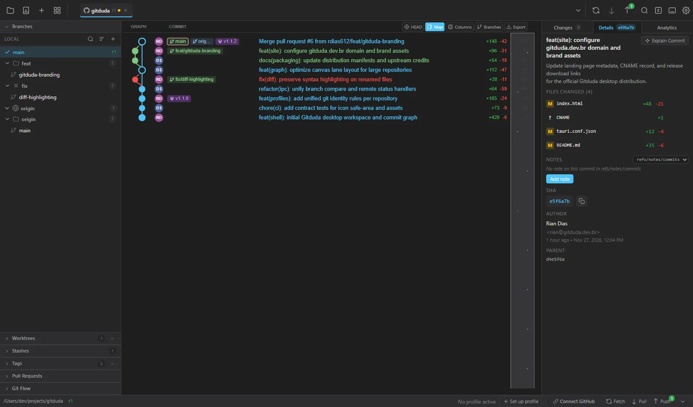

Rust core
The backend uses Rust and libgit2 to read history and work with the repository.
Desktop Git client
Built around a Rust core, Gitduda is designed to use memory efficiently as you explore large histories, review diffs, and prepare your next commit.
See install optionsWindows, macOS, and Linux · Open source under the MIT license
Virtualized rendering
The backend uses Rust and libgit2 to read history and work with the repository.
Tauri uses your platform's WebView to display the app interface.
Text generation uses the provider you configure. The app ships without a bundled language model engine.

Read syntax-highlighted diffs and stage individual files, hunks, or lines for your next commit. Stage or unstage everything at once when you need to.
Start with a message based on your staged files. Edit it and use the character counter with a configurable limit to guide the subject length.
Open the active repository in your configured editor with Ctrl + Shift + A on Windows and Linux, or ⌘ + Shift + A on macOS.
Reorder or combine commits with interactive rebase, resolve conflicts in the three-way merge editor, and create branches from tags.
Work across branches with Git worktrees, switch workspaces from the repository picker, and manage stashes, submodules, and Git LFS. Use the reflog to undo operations.
Compare images side by side, with an overlay or a slider, or in difference mode. Inspect text files with blame and per-file history.
Track pull requests, issues, releases, and pipelines with integrations for GitHub, GitLab, Azure DevOps, and Bitbucket. Link your work to Jira tasks.
Keep work and personal identities separate, sign commits with GPG, and use the built-in terminal. Find branches, files, and commits with the command palette and quick search.
Use Gitduda without an account, a subscription, or telemetry.
Find changes based on the meaning of your query. Candle and SQLite handle indexing and search on your computer.
Generate commit messages, changelogs, and suggestions for resolving conflicts. Run Ollama or LM Studio locally, or choose from four cloud providers.
Connect your coding assistant to Gitduda using a token. Write operations are disabled by default.
See how to connect an assistantInstallers are available on GitHub Releases.
Build from sourceWindows 10 or later, x64
Via winget
winget install rdias612.GitdudaVia Scoop
scoop install https://raw.githubusercontent.com/rdias612/gitduda/main/packaging/scoop/gitduda.jsonmacOS 11 or later, Apple Silicon
Via Homebrew
brew install --cask rdias612/gitduda/gitdudaLinux x64 with GTK 3.24 or later